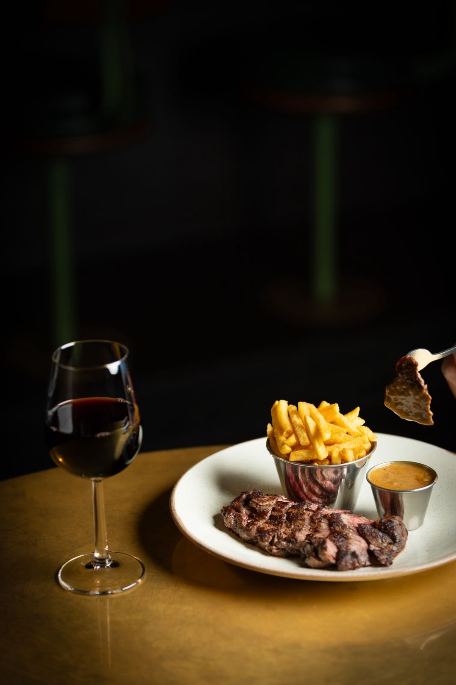

Late-night dining in London at temper Restaurant: fire-cooked dishes, cocktails & lively vibes. Open late for night owls, creatives & revellers.

London’s lights don’t dim at dinner. For the city’s night owls, after-hours creatives, hospitality crews, and spontaneous revellers, late-night restaurants in London aren’t just a convenience — they’re a necessity.
Enter temper: one of the few central kitchens where the flames burn late and the menu doesn’t shut down when the curtain drops. Whether it’s 9:30PM and you’re just getting started, or midnight and you’re desperate for more than fries, we’ve got you.
Late doesn’t mean lesser. If anything, it means louder, looser, and often, better.
By day, temper hums. By night? It growls.
Think:
• Music turned up just enough to feel
• Open fire reflecting off the tiles
• Chefs still plating with pride and pace
• Groups ordering that second round of tacos
• Bartenders pouring mezcal like midnight’s just getting warmed up
This is late-night dining that’s full of pulse, not leftover energy. It’s where afterparties start, not end.
Unlike places that pretend to be “open late” but run out of options by 9:30, our fire doesn’t back down.
Late-Night Menu Highlights:
• Coal-roasted short rib with burnt chilli glaze
• Aged steak finished over open flame
• Smoked pork belly with ember onions
• Wild taco platters with spicy slaw and salsa
• Roasted corn with chipotle butter
• Cocktails and mezcal flights curated for the late shift
It’s not “after hours” food. It’s just our food, served late, hot, and proper.
Just off Broadwick Street, minutes from the bars, clubs, and after-hours chaos of central London. A favourite among service industry staff, artists, and anyone who knows Soho doesn’t sleep.
⏰ Kitchen open late | 🔥 Full fire menu | 🎶 Post-theatre crowd welcome
You’ve seen the curtain drop — now you need something real. Our restaurant offers one of the city’s best late-night food options, especially if you want a table without a 3-month wait.
⏰ Walk-ins welcome | 🌮 Late-night taco boards | 🍸 Mezcal ’til the end
Creative crews, hospitality heads, and those “one more drink” types — this is your spot. Big groups, deep playlists, full menus, and the kind of late-night dining that feels like it belongs to you.
⏰ Table service late | 🔥 Late-fire feasts | 🍷 Perfect for spontaneous nights out
Let’s get something straight — we’re not frying frozen chips or slinging soggy burgers. Our late-night menu is exactly what we serve earlier. But when you’ve got the city’s best crowd in the room, you serve like it’s peak time.
Plus:
• No “late surcharge” or cut-down versions
• Same chefs, same flavour, same energy
• Late-night cocktail pairings and flights
• Proper vegetarian and meat-forward options
• Menus that can handle foodies, dates, and spontaneous walk-ins alike
“Tried to find somewhere open after a gig — ended up here, now I won’t eat anywhere else late.”
“Booked for 10PM thinking we’d get scraps. Full service, full menu, best meal of the trip.”
“The only kitchen in Soho still cooking after 10. Steak came hot off the fire. Unreal.”
We’re proud to be one of the few restaurants in London that treats late-night food as real food. No compromises.
Whether you’re:
• Coming from a show
• Finishing a shift
• Escaping the noise
• Making it a second dinner
• Or just finally got hungry
We’re open. We’re on. And we’ve got a table with your name on it.
What time does temper serve food until?
All locations serve food until late. Exact hours vary by day and site — Soho is often latest. Check the bookings page for specifics.
Do you offer the full menu after 10PM?
Yes. Our late-night menu is the same menu. No compromises.
Can I walk in after 10PM?
Yes — especially in Soho and . But if you want to guarantee a seat, booking is smart.
Is the bar still open late?
Yes. Full drinks menu, mezcal, and cocktails served until close.
Do you have vegetarian options at night?
Absolutely. Fire-roasted aubergines, charred veg tacos, and more — all built with flavour.
It’s not just about being open. It’s about being ready — and we are.
So next time you’re hungry at 10PM, don’t settle. Don’t down a bag of crisps and call it dinner. Come where the fire’s still hot, the drinks are still pouring, and the food’s still the real deal.
Planning a visit? Explore our London restaurants and signature experiences: